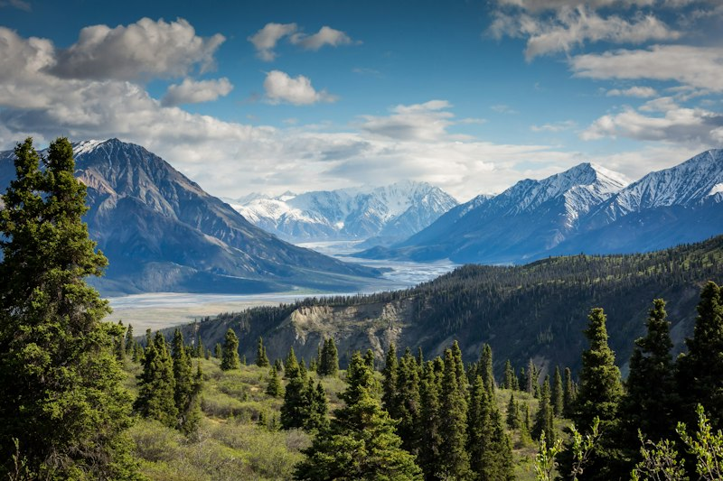
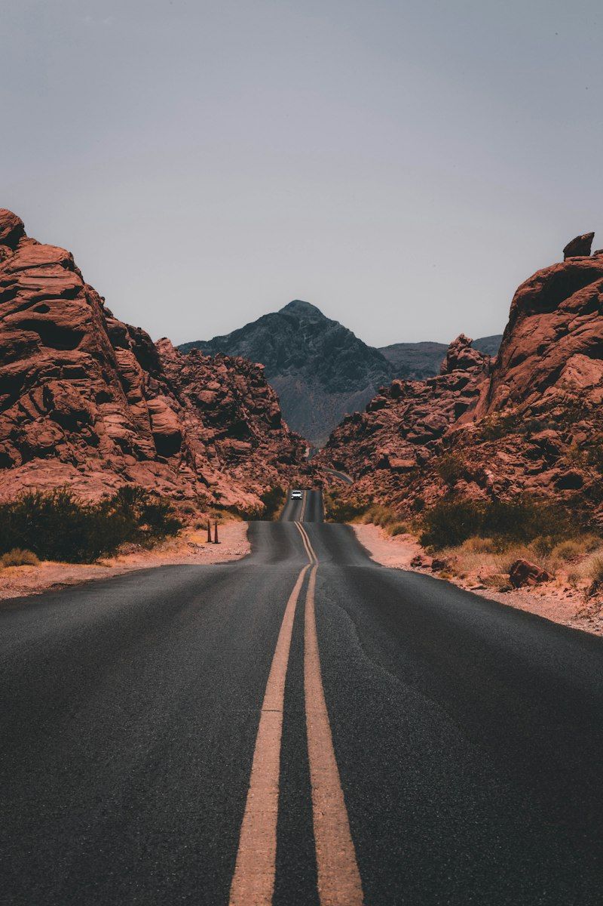
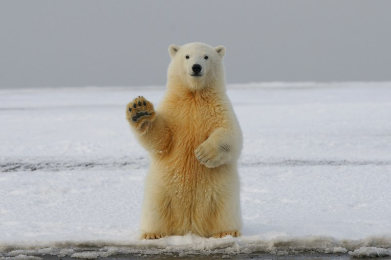

The recovery of the grizzly bear (Ursus arctos horribilis) across the Greater Yellowstone Ecosystem stands as one of the most celebrated achievements in the history of wildlife biology. From a precarious population of fewer than 140 bears when listed under the Endangered Species Act in 1975, collaborative stewardship has enabled this population to rebound to more than 1,000 animals today.
Yet beneath this quantitative triumph lies a fragile reality: Yellowstone’s grizzly bears remain geographically and genetically isolated from all other wild bear populations in North America. To secure their survival for future generations, our conservation focus must shift beyond park borders to establish permanent landscape connectivity and foster peaceful coexistence with agricultural communities.

The Genetic Imperative: Connecting Isolated Bear Populations
Unlike mobile birds or wide-ranging river species, grizzly bears have low reproductive rates and exhibit strong home-range fidelity. While male bears frequently disperse over long distances, female bears typically establish home ranges adjacent to their mothers. Consequently, natural population expansion occurs slowly over generations.
Genetic isolation poses a severe long-term threat. Inbreeding depression, reduced adaptability to shifting climate regimes, and vulnerability to localized disease outbreaks can jeopardize isolated populations. Biologists agree that natural genetic exchange between the Greater Yellowstone bears and the Northern Continental Divide Ecosystem (surrounding Glacier National Park) is essential for long-term demographic health.
Our field teams have mapped the critical terrain corridors connecting these two majestic ecosystems—specifically the Centennial Mountains of Idaho and Montana, the Pioneer Mountains, and the Big Hole Valley. Securing these forested stepping stones connects directly to our work defending unroaded national forest wilderness areas under the Roadless Rule.

Frontline Coexistence: Partnering with Ranching Communities
As bear numbers have expanded outward from the core of Yellowstone National Park into multi-generational working ranchlands in the Madison, Paradise, and Upper Green valleys, human-bear encounters have naturally increased. Historically, conflict over livestock predation or grain attractants resulted in bear mortalities and economic hardship for producers.
We believe lasting wildlife conservation must work for local people. Rather than relying on confrontational mandates, our coalition finances practical, non-lethal conflict deterrence infrastructure:
- Electrified Livestock Enclosures: We fund and install high-voltage electric fencing around calving pastures, sheep corrals, beehives, and livestock feed storage bins, virtually eliminating nighttime intrusions.
- Carcass Removal Programs: Removing naturally deceased livestock from pastures in early spring removes the primary olfactory attractant that pulls emerging hungry bears toward ranch homes.
- Range Rider Programs: Supporting seasoned cowboys and biologists who patrol remote grazing allotments on horseback, monitoring herd health and deterring carnivores non-lethally.
Documented case studies demonstrate that ranches utilizing our collaborative coexistence tools experience a 75% to 85% drop in livestock depredations, proving that productive agriculture and apex predators can share this landscape sustainably. This proactive community stewardship mirrors the collaborative ethos of our Madison Valley wildlife highway crossing initiative.

Climate Adaptation and Natural Forage Dynamics
Yellowstone grizzlies are supreme omnivores whose diet shifts dynamically across seasons. In early spring, winter-killed ungulate carcasses provide crucial protein. By mid-summer, bears feast on army cutworm moths in high alpine talus slopes, wild berries, and the calorie-dense seeds of whitebark pine cones.
However, global climate change and invasive blister rust have caused widespread declines in whitebark pine stands across the Northern Rockies. In response, grizzlies have demonstrated remarkable behavioral plasticity, switching to alternate food sources such as root tubers, mushrooms, and pocket gophers.
Ensuring that mother bears with cubs have secure, quiet backcountry refuges during critical hyperphagia (autumn feeding) requires keeping large roadless blocks free from motorized disturbance and industrial development. This core ecological goal is central to our broader Strategic Conservation Priorities and Tri-State Management Matrix.

The Road Ahead: Safeguarding an American Icon
A healthy grizzly bear population is the definitive hallmark of an intact ecosystem. When grizzly bears thrive, the entire biological web—from clean headwater springs guarded for native cutthroat trout to sovereign ranges revitalized through tribal bison restoration—remains vibrant and intact.
Through scientific research, community trust-building, and unyielding defense of public wildlands, we are paving the way for a connected future where North America’s greatest apex predator roams freely without borders.
Support Grizzly Bear Coexistence Today
Your tax-deductible gift directly funds electric fencing materials for family ranches, range rider patrols, and land easements securing critical migration chokepoints.
Contribute to the Coexistence Fund